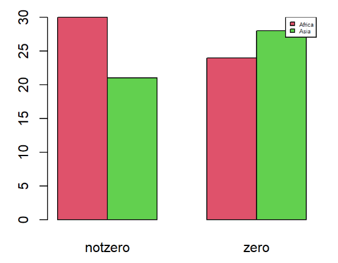

Projects
Selected highlights from coursework and personal projects.
Finals Interpreter (Java)
Screenshot from the Finals Interpreter GUI (student project).
GUI application built with Java Swing (JFrame). Helped students parse and analyze final exam schedules. Implemented parsing logic and interactive components for easier interpretation.
Secret Santa App (Java)
App UI used for assigning gift pairs (student assignment).
Randomized gift exchange system implementing HashMap-based assignment to ensure unique gifter/receiver pairs. Focused on object-oriented design and robust randomization.
Event-based Website (CodePath / Independent)

Screenshot from the student-built tech conference site.
Built an event-driven website (front-end + simple back-end concepts) as part of CodePath Web Development. Highlights: schedule pages, event registration UI, and accessible navigation.
Glorem — WIX Site
Homepage screenshot for Glorem (published site).
Designed and published a responsive website for the missionary organization Glorem using WIX. Focused on content layout and accessible navigation for donors and volunteers.
Visit Glorem.org
Religious Persecution Research (R)

Sample plot generated during analysis (student research).
Statistical analysis across 103 countries including two-sample proportion tests and visualizations in RStudio. Produced insights comparing persecution rates between continents.
View research document (Google Doc)